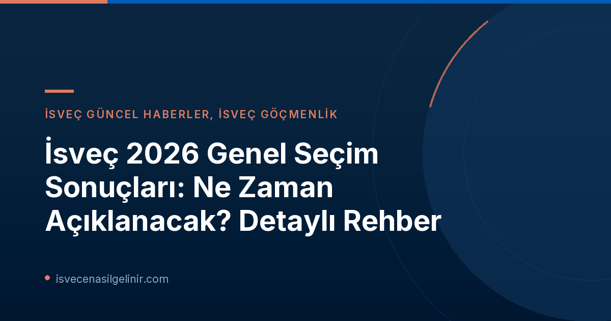

İsveç 2026 Genel Seçimleri: Sandıklar Kapanınca Neler Olacak?
Her dört yılda bir yapılan İsveç Genel Seçimleri, ülkenin yönetimini belirleyen kritik bir demokratik süreçtir. 2026 seçimleri de bu geleneğin bir parçası olarak siyasi arenada büyük bir hareketlilik yaratıyor. Seçim günü Pazar akşamı sandıklar kapandığında, tüm gözler oy sayım sürecine ve ilk sonuçlara çevrilecek. SVT'nin deneyimli val muhabiri Fouad Youcefi'nin aktardığı bilgilere göre, seçim gecesi ve sonrasındaki adımlar, önceki yıllara göre farklı dinamikler içerecek.
Öne Çıkan Bilgiler
- SVT'nin Yeni Seçim Tahmini: Dijital raporlama ile birlikte, SVT'nin geliştirdiği yeni seçim tahmin sistemi, sonuçların daha hızlı öngörülmesinde kilit rol oynayacak.
- Erken İpuçları: İlk sayılan seçim bölgelerinden gelen veriler, genel eğilim hakkında önemli ipuçları verecek.
- Resmi Sonuç Gecikmeleri: Bloklar arasındaki yakın sonuçlar, resmi val sonuçlarının açıklanma süresini uzatabilir.
Seçim Sonuçlarının Açıklanma Zaman Çizelgesi: Saat Saat Takip
Sandıklar kapandıktan sonra oyların sayımına hemen başlanacak. Ancak "seçimin kazananı" olarak adlandırılabilecek ismin ne zaman açıklanacağını belirleyen birçok faktör bulunuyor. İşte val gecesi ve takip eden günlerde dikkat etmeniz gereken önemli anlar:
| Aşama | Zaman Dilimi (Tahmini) | Detaylar |
|---|---|---|
| Sandıkların Kapanması ve Oy Sayımı Başlaması | Pazar Akşamı (Seçim Gecesi) | Vallokal kapandıktan hemen sonra oylar sayılmaya başlar. |
| İlk Dijital Raporlamalar ve SVT Prognosları | Seçim Gecesi İlk Saatler | Dijital sistemler ve SVT'nin yeni tahminleri sayesinde oy oranlarına dair ilk öngörüler gelir. |
| İlk İlçelerden Gelen Sonuçlar | Seçim Gecesi İlerleyen Saatler | İlk sayımı tamamlanan küçük seçim bölgelerinin sonuçları, genel eğilimi anlamak için kritik veriler sunar. |
| Bloklar Arası Yarışın Netleşmesi | Pazartesi Sabahına Doğru | Partilerin ve blokların genel oy oranları daha belirgin hale gelir. |
| Resmi Sonuçların İlanı | Bloklar Arasındaki Farklara Bağlı Olarak Daha Sonraki Günler | Çok yakın geçen seçimlerde nihai resmi açıklama biraz daha uzun sürebilir. |
Erken Tahminler ve SVT'nin Val Prognosu
SVT, seçim sonuçlarını öngörmek için yeni ve gelişmiş analiz yöntemleri kullanıyor. Özellikle dijital raporlama sistemlerinin yaygınlaşması, ilk verilerin çok daha hızlı bir şekilde kamuoyuyla paylaşılmasını sağlıyor. Bu durum, seçimin gidişatına dair ilk ipuçlarını almak isteyenler için hızlı bir genel bakış sunar. "Så kan SVT förutspå valresultatet" başlıklı daha önceki haberler de SVT'nin bu alandaki yeteneklerini ortaya koyuyor.
Seçim Sonuçlarını Etkileyen Önemli Faktörler ve Olası Gecikmeler
İsveç seçimlerinde sonuçların açıklanma hızını doğrudan etkileyen birkaç önemli faktör bulunmaktadır:
- Bloklar Arası Yakınlık: Eğer siyasi bloklar arasında çok az oy farkı olursa, bu, resmi sonuçların açıklanma süresini uzatabilir. Her oyun büyük önem taşıdığı böylesi durumlarda, daha detaylı sayımlar ve itiraz süreçleri gerekebilir.
- Bağımsız Bölgeler: Özellikle Ulf Kristersson'un geleceğini etkileyebilecek gibi kritik konumdaki üç seçim bölgesi örneği, küçük farkların bile büyük etkiler yaratabileceğini gösteriyor. ("Tre valdistrikt kan avgöra om Ulf Kristersson får fyra yıl daha" haberi).
- "Dramatik Kastlar": Son anketlerde görülen "dramatik kastlar" veya ani değişimler, val gecesini daha da heyecanlı hale getirebilir ve sonuçların belirsizliğini artırabilir.
İsveç'te süregelen demokratik süreçler, ülkenin geleceğini şekillendirmede anahtar rol oynamaktadır. İsveç'te yaşamakta olan veya gelecekte İsveç Vatandaşlık Sınavı ile vatandaşlık almayı düşünen herkes için bu tür seçim süreçlerini anlamak büyük önem taşır. Ülkenin siyasi yapısı, göçmenlik politikaları ve sosyal yaşam üzerinde doğrudan etkili olabilir.
İsveç Vatandaşlığı ve Seçimlere Katılımın Önemi
İsveç'te kalıcı olarak yaşama ve ülkenin geleceğinde söz sahibi olma yolunda atılan en önemli adımlardan biri vatandaşlık almaktır. İsveç vatandaşı olmak, yalnızca seyahat özgürlüğü veya bazı sosyal haklar anlamına gelmez; aynı zamanda genel seçimlerde oy kullanma ve siyasi süreçlere aktif katılım hakkı da tanır. Bu nedenle, seçim sonuçlarının takibi, ülkenin genel gidişatını anlamak ve gelecekteki olası değişiklikleri öngörmek açısından kritik bir öneme sahiptir.
Bu seçimlerin sonuçları, İsveç'in önümüzdeki dört yıl boyunca hangi yönde ilerleyeceğini büyük ölçüde belirleyecektir. Tüm gelişmeler için bizi takip etmeye devam edin.
Referanslar:
- SVT Nyheter Inrikes: Då ska du ställa klockan – för att veta vem som vann valet
- Sverigemedborgarskapsprov.com
İsveç'te Yeni Hayatınız İçin Adım Atın
İsveç'e yerleşme, çalışma veya vatandaşlık süreçleri hakkında bilgi almak isterseniz, uzman kadromuzla iletişime geçin ve süreci hızlandırın.